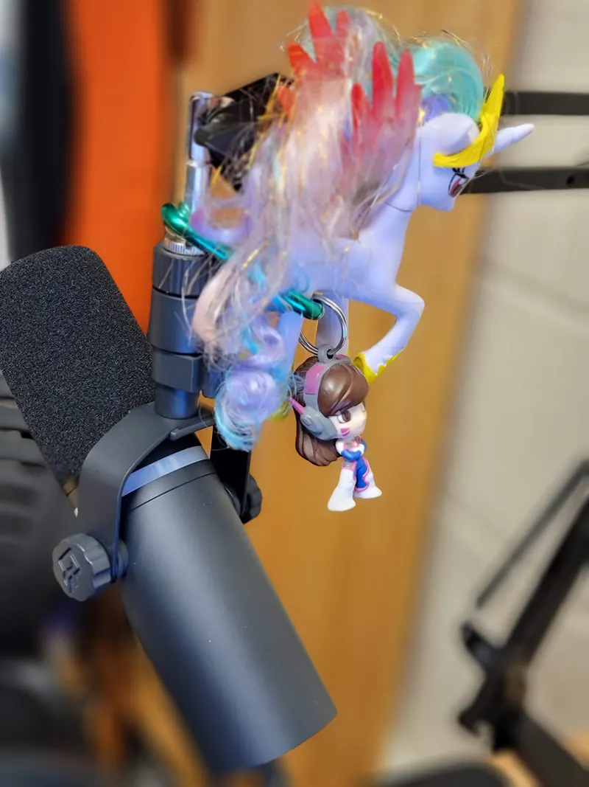
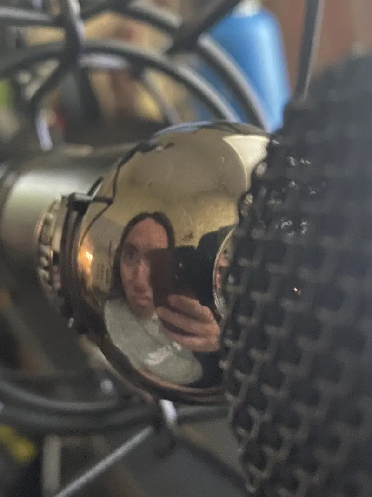
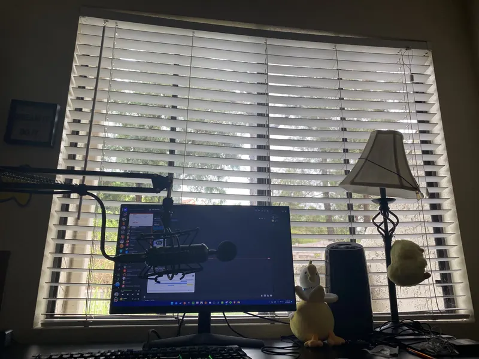
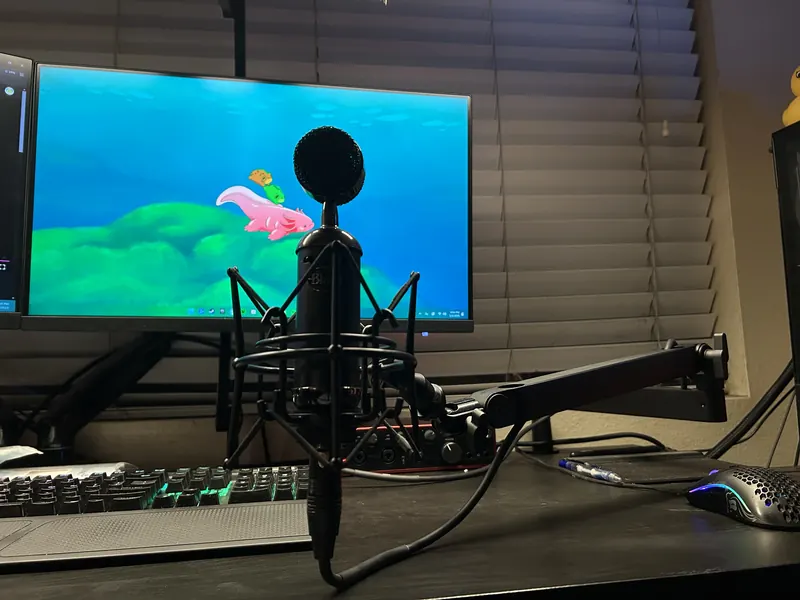
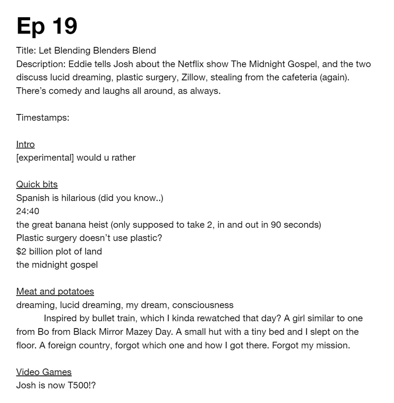

On this page
TL;DR
During long car rides, Eddie found inspiration from podcasts like Ear Biscuits and Distractible, leading to the creation of Hyperdash, a podcast centered around video games. Co-hosted with Josh, they navigated the challenges of recording, editing, and producing weekly episodes using budget-friendly equipment and a mix of software like Audacity, Adobe Audition, and Da Vinci Resolve. While creative approaches like Minecraft-inspired visuals added a unique flair, the workload eventually became overwhelming, leading to the podcast's hiatus. Despite a small but engaged audience on platforms like Amazon Music, Hyperdash left lasting memories and sparked an interest in exploring podcasting again someday. Eddie's experience in an English podcasting class further reinforced the creative joy behind such projects.
The Vision
During long car rides I'd get lost in podcasts like Ear Biscuits, Dear Hank and John, Watchtime, and Distractible. I'd listen to these funny and charismatic people ramble on for hours on end, but eventually I wondered whether I could start my own podcast. I could talk about whatever I was interested in, which probably ended up being videogames, and Hyperdash was born.
Josh, my co-host for the later part of Hyperdash's run, was kind enough to join me and talk about Hyperdash. Hey Josh!
hallo eddie!
So Josh's font will look like that and my font will look like this.
We needed a new logo, and since the podcast was about video games, I just put the name on a simple pattern in Photoshop and put the logos of our favorite games on there.
Studio
There's not a lot of equipment you need to podcast - it's pretty much exactly what you expect. A microphone, audio editing software, and some way to upload your podcasts.
The microphone I use was the same one I use to stream and record YouTube videos (read more about those adventures here). It's the Fifine K669 and I've got it on a budget mic stand.
Those are affiliate links, by the way. I may get a small commission with no extra cost to you. The rest of the amazon links on this page are all also affiliate links.

Anyways, the mic and the mic stand are both pretty cheap, but they get the job done. Since I use Adobe Audition and its audio effects and filters for processing the audio, I can make it sound a lot better than the price tag indicates.
my mic setup for Hyperdash wasn't anything too special. but to give a bit of backstory, before covid hit, my dad purchased a Blue Blackout Spark SL to potentially record some of his music with a couple of his friends.

but alas, covid changed the entire world—and my potential microphone. fast forward two years and as i was searching for an upgrade from my Razer Kraken X headset, i remembered a microphone in a cabinet that never got the chance to be used.

ever since then, i've used this mic for more than Hyperdash: calls, recordings for eddie's YouTube channel (this one was my favorite, but he can tell you more about that), and your typical microphone uses as well.
back then, i had my mic mounted on some cheap amazon mic stand, but i've since upgraded to the Wave Mic Arm LP from Elgato; definitely more sturdy than my old one.

For processing, we split up the work to match our skills: I handled editing audio and Josh handled editing the videos and thumbnails.
As for the software we used, fasten your harness. In total I used 3 programs: Audacity, Adobe Audition, and Da Vinci Resolve. I used Audacity to record, Adobe Audition to apply filters to the audio, and Da Vinci Resolve to cut and add music and sound effects to the audio. Realistically, I only needed one: Adobe Audition. Thankfully the university provides the Adobe suite to its students so I could access this industry leading software for “free”. I'm not sure why I used Audacity to record. I know Josh doesn't have access to Adobe Audition so I showed him how to use Audacity, but I could have just recorded in Audition. And I consciously chose to use DaVinci Resolve to cut and add effects to the audio. I was far more used to editing in DaVinci Resolve and was too lazy to learn new key bindings and shortcuts in Audition.
Josh, over to you. What did you use to edit the videos and thumbnails?
i used Filmora, a not-so-known editing software, but one that i had used for almost 3 years on personal projects at the time of Hyperdash's inception. we wanted Hyperdash to have its own unique flair, but still took inspiration & formats from other podcasts we listened to. when planning the podcast, eddie and i both knew how we couldn't use our actual faces; not only that we didn't want to, but we just didn't have the equipment at the time to do so. so, we opted to use Minecraft (yes, the “block game”) as a way of putting a “face” on the voices that you, the viewer, would be hearing. we focused on accomplishing this goal on YouTube, one of the different platforms we ended up utilizing, but the only platform where we could make videos & thumbnails.
editing the videos was BY FAR the most tedious part of this whole process. from building sets in-game, to get the lighting just right, and then to use a community-made mod (Replay Mod by CrushedPixel and johni0702) to record all of the footage. like any other major podcast with a youtube channel, we recreated the whole “feel” of a two-person (albeit, with one exception) podcast quite successfully in my eyes.
then came the thumbnails, unlike eddie, i didn't have educational access to Adobe's Creative Cloud programs, notably Premiere Pro, Photoshop, and After Effects. i ended up using a web-based, free version of Adobe's Photoshop called Photopea, which is where all of the episodes' thumbnails were made. for every thumbnail, i wanted to make sure that at least one of the characters' faces were included, keeping that “putting a face on the voice” mantra in mind. out of all of the thumbnails that were posted onto the Hyperdash channel, my favorite out of all of them would have to be the thumbnail for The Chocolate Connoisseur or Episode 13.
For uploading the podcasts, we just used Spotify for Creators, which was previously named Anker. It was the best free option out there, and let us get our podcast directly onto big platforms like Spotify, Amazon music, Apple podcasts, and many more.
Process
After making a few episodes, Josh and I got into a rhythm. The basic plan was simple: we planned out our episodes, recorded them, edited them, and uploaded them. Throughout the week Josh and I would note down anything interesting that happened during our weeks or any news we want to discuss. Our plans ended up looking like this:

When it came to recording, we just set it up, and … talked. Considering the lack of planning we did (we loosely followed the outline and yapped) it's a miracle our episodes were remotely coherent.
Every good podcast has a recognizable intro. I don't know how it started, but starting in episode 10 (Devious Ways to Serve Breakfast), we always began with:
Welcome back to the Hyperdash Podcast, where two friends hang out, tell stories, and talk about video games. I'm Eddie.
And I'm Josh.
This week, ...
We'd always start off by asking each other “would you rather” questions. I think our best one was “would you rather eat a baby goat or a matter baby”.
Our favorite moments
Probably one of my favorite moments is when I talked about becoming the “Banana Bandit” at my university.
I'll spare the full story but it's about how I got posted on my school's social media page as the “banana bandit” after being caught red-handed taking too many bananas out of the dining hall.
i have two very fond memories from Hyperdash: firstly, the “Metro Fire” bit from Devious Ways to Eat Breakfast or Episode 10. or, our collective discovery of the “Djungelskog” and other IKEA names in Djungelskog and the Return of the Chocolate Connoisseur or Episode 15, starting from the 22:15 timestamp on Spotify.
Farewell (for now)
But making a new episode every week stretched us too thin. After all, it was planning, recording, editing audio, and editing video every single week. We decided to cut back and stop making episodes. It was too much to keep up with.
There was this tool that I saw and considered buying called AutoPod that would have greatly simplified Josh's process for editing the videos, but we didn't end up getting it.
In retrospect, buying (or pirating) AutoPod would have been worth it, especially because I had the money to spare and it would have simplified the process of editing the video a ton. Investing in hobbies (in moderation) is worth it for personal enjoyment.
Incidentally, I was streaming modded Minecraft one day when I had a chatter come in and ask me why we stopped uploading. I didn't think we had too many engaged listeners from the metrics, but this person said they were from Amazon Music (which also offers podcasts). After the stream I logged into my analytics page for Amazon Podcasts and was surprised to see several consistently engaged listeners, and then I felt guilty for disappearing, especially without saying anything.
I hadn't even realized that we had built a small audience on Amazon Music: I was so focused on metrics for Spotify and YouTube that I completely ignored looking at the numbers for other platforms.
ENGL 384
Though my focus is on computer science and business, I want to take classes in English if my schedule allows it because reading and writing interest me. I also find that a lot of my hobbies involve a creative writing aspect, and of course writing is a skill you'll use for the rest of your life. But I digress.
Signing up for classes in my 1st year spring semester, I came across a class called ENGL 384 - Podcasting, and figured I could learn something new from it. My professor was fantastic and I ended up making an episode about a personal narrative and one in which I interviewed my sister's girlfriend about her time in her tech career. Generally I've found English professors to be wonderful and chill people, and that class was pretty fun. Despite hyperdash's rather short stint, I'll keep my options open to running a podcast again some day.